1. Corps purs et mélanges
Une espèce chimique est un ensemble d'entités chimiques identiques.
a. Corps pur
Un corps pur est constitué d'une seule espèce chimique.
Corps pur simple : constitué d'un seul type d'atomes.
Corps pur composé : constitué de plusieurs types d'atomes en proportions définies.
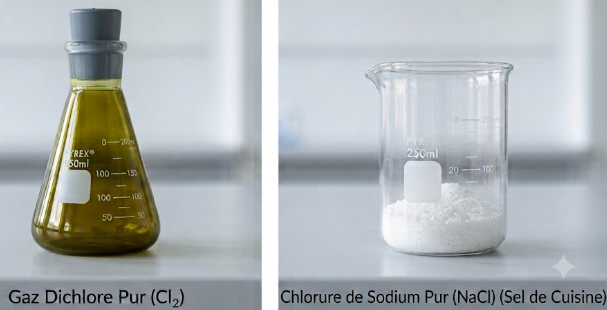
Corps pur simple : dichlore Cl₂ (gauche) — Corps pur composé : chlorure de sodium NaCl (droite).
b. Mélange
Un mélange est constitué de plusieurs espèces chimiques.
- Mélange homogène : on ne distingue pas les constituants à l'œil nu après agitation.
- Mélange hétérogène : on distingue au moins deux constituants à l'œil nu même après agitation.
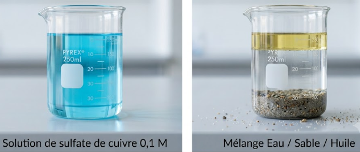
Mélange homogène (solution de sulfate de cuivre, gauche) et mélange hétérogène (eau/sable/huile, droite).
Corps pur simple : une seule espèce moléculaire (ex : O₂, toutes les molécules identiques).
QCM — Corps purs et mélanges
LISTE DÉROULANTEComplète chaque affirmation en choisissant la bonne réponse.
2. Température de changement d'état
a. Définition
Un changement d'état est une transformation physique correspondant au passage d'un état (solide, liquide, gazeux) à un autre.
Sous pression donnée, le changement d'état s'effectue à une température constante, caractéristique de l'espèce chimique.
Solide : molécules ordonnées, vibrations sur place, volume et forme propres.
b. Mesure expérimentale
- Température d'ébullition → mesurée avec un thermomètre
- Température de fusion → déterminée avec un banc Kofler (plaque métallique à gradient de température) — voir la technique ↗
QCM — Changements d'état
LISTE DÉROULANTESélectionne la bonne réponse dans chaque liste.
3. Masse volumique et densité
a. Masse volumique ρ
La masse volumique est le quotient de la masse d'un échantillon par son volume.
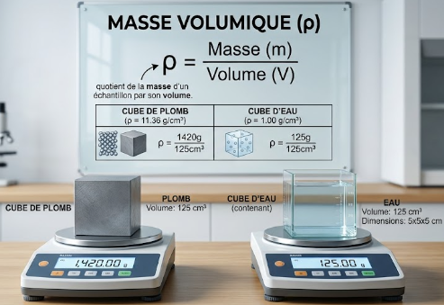
À volume égal (125 cm³), le cube de plomb (1 420 g) est bien plus lourd que le cube d'eau (125 g) : ρplomb ≫ ρeau.
b. Densité d

Thermomètre de Galilée : les bulles flottent ou coulent selon leur densité relative au liquide.
Nombre sans dimension – rapport de masses volumiques.
d = ρespèce / ρeau
d = ρespèce / ρair
— d < 1 → flotte dans l'eau | d > 1 → coule dans l'eau
C'est pourquoi les nappes d'hydrocarbures restent en surface des océans !
QCM — Masse volumique et densité
LISTE DÉROULANTEComplète chaque affirmation en choisissant la bonne réponse.
4. CCM & Composition des mélanges
a. Chromatographie sur couche mince (CCM) — voir la technique ↗
Technique de séparation et d'identification des espèces chimiques.
- Phase stationnaire : silice de la plaque CCM
- Phase mobile (éluant) : solvant qui migre dans la plaque
- Les espèces migrent différemment selon leur affinité pour les deux phases
- Plusieurs taches à hauteurs différentes → mélange
- Identification : on compare les hauteurs de taches avec des références
Composition d'un mélange
b. Composition massique
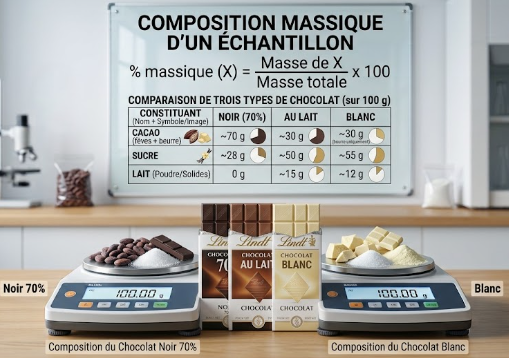
Comparaison de la composition massique de trois chocolats (sur 100 g) : cacao, sucre et lait.
c. Composition volumique (mélanges gazeux)
Application — CCM et composition
LISTE DÉROULANTEComplète chaque affirmation en choisissant la bonne réponse.
Schéma des changements d'état
Associe chaque numéro du schéma au bon changement d'état ✦
Activité 1 — Simulation PhET : masse volumique
Simulation interactive (PhET, Université du Colorado, licence libre) : comparez des blocs de matériaux différents pour relier masse, volume et masse volumique.
📋 Guide d'utilisation
- Cliquez sur l'onglet « Comparer » en haut de la simulation.
- Faites glisser deux blocs de même volume mais de matériaux différents (ex : bois et bronze) sur la balance à droite. Observez laquelle penche.
- Affichez la case « Masse volumique » pour voir apparaître la valeur ρ de chaque bloc.
- Recommencez avec deux blocs de même masse mais de matériaux différents : comparez cette fois leurs volumes.
- Passez ensuite à l'onglet « Mystère » : un bloc de masse et volume inconnus est proposé. Utilisez la balance et la règle pour déterminer m et V, calculez ρ, puis identifiez le matériau grâce au tableau de référence.
Partie 1 — Activité p.23 : Retrouver une eau minérale
TPDans un restaurant, un serveur a préparé trois carafes pour des clients, chacune contenant une eau minérale différente (Vichy-Saint-Yorre, Hépar et Volvic), mais il a malencontreusement mélangé les carafes.
❓ Comment aider le serveur à servir l'eau minérale demandée par chacun de ses clients ?
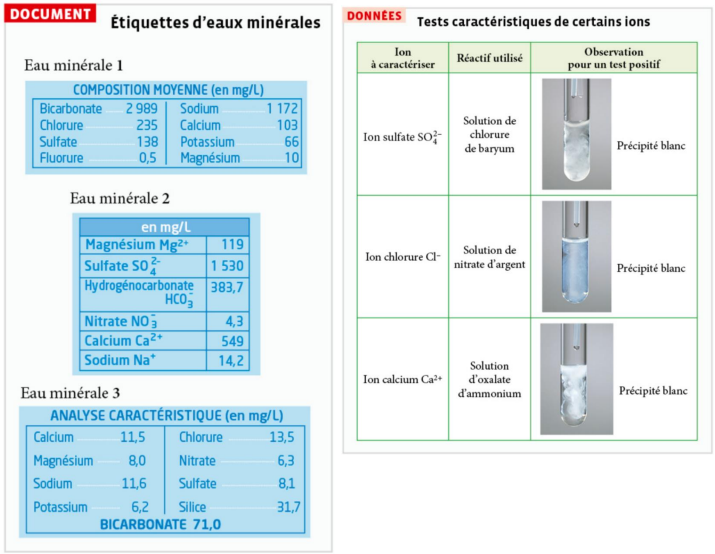
Document — étiquettes des 3 eaux minérales & Données — tests caractéristiques des ions sulfate, chlorure et calcium.
Partie 2 — Activité p.25 : Enquête sur des stocks d'ingrédients
TPIl prélève des échantillons dans chaque emballage pour les identifier.
❓ Comment peut-il identifier les espèces chimiques constituant les ingrédients ?
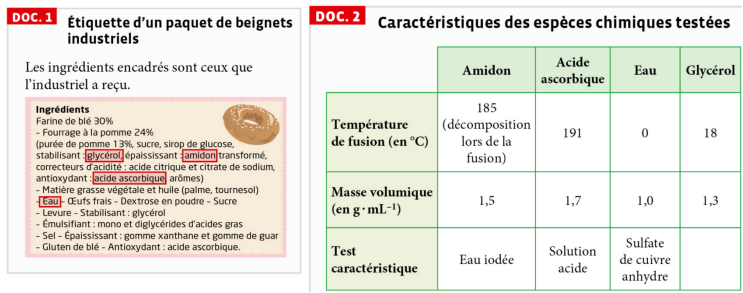
Doc 1 — étiquette du paquet de beignets industriels & Doc 2 — température de fusion, masse volumique et test caractéristique de l'amidon, de l'acide ascorbique, de l'eau et du glycérol.
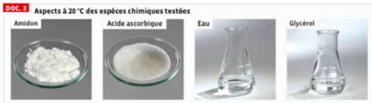
Doc 3 — aspect à 20 °C de l'amidon, de l'acide ascorbique, de l'eau et du glycérol.
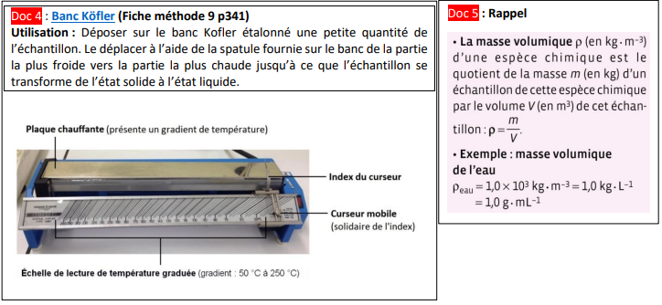
Doc 4 — utilisation du banc Köfler pour déterminer une température de fusion & Doc 5 — rappel sur la masse volumique.
🎬 Utilisation du banc Kofler — CultureSciences Chimie · 3 min 19 ↗
Activité 4 p.24 : Jaune, tu crois qu'on va nous retrouver ?
TP❓ Quels sont les colorants alimentaires utilisés dans les dragées chocolatées ?
Principe de la CCM
Chromatographie vient du grec « Khrôma » (couleur) et « Graphein » (écrire). Cette technique permet de séparer les espèces chimiques présentes dans un mélange homogène, donc de contrôler la pureté d'un échantillon. Elle permet également d'identifier les espèces chimiques présentes dans l'échantillon. Les échantillons à tester, ainsi que les échantillons témoins, sont disposés sur une plaque de chromatographie (phase fixe) plongée dans un éluant (phase mobile).
- Une tache (quelle que soit sa grosseur et sa forme) correspond à une espèce chimique.
- Deux taches appartenant à deux dépôts différents mais qui sont à la même hauteur correspondent à la même espèce chimique.
- Plusieurs taches pour un même dépôt indiquent que l'échantillon est un mélange, sinon c'est un corps pur.
- Plus une tache est haute, plus l'espèce chimique a été entraînée par l'éluant facilement.
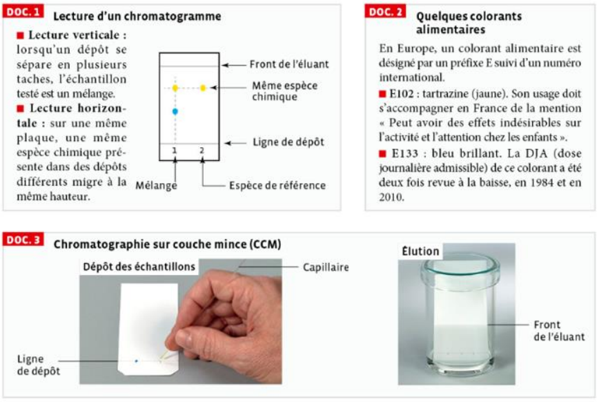
Doc 1 — lecture d'un chromatogramme & Doc 2 — quelques colorants alimentaires & Doc 3 — principe de la chromatographie sur couche mince.
- Introduire une dragée ou un bonbon (vert par exemple) dans un bécher. Ajouter un minimum d'eau distillée pour dissoudre les colorants et obtenir ainsi une solution concentrée en colorants. Retirer les dragées chocolatées avant que le chocolat se dissolve.
- Réaliser une chromatographie sur couche mince :
- Préparation de la cuve à éluant : la cuve à élution est un bécher haut contenant un liquide appelé « éluant » sur une hauteur d'environ 0,5 cm. Éluant utilisé : eau salée à 20 g/L.
- Préparation du chromatogramme : préparer votre plaque (environ 5 cm × 12 cm). À environ 1,5 cm du bord inférieur, tracer délicatement au crayon un trait fin : c'est la ligne de dépôt (les dépôts ne devront pas tremper dans l'éluant). Marquer par des croix ou des traits les emplacements correspondant aux échantillons à déposer, en gardant un espace minimum avec les bords de la plaque, et repérer chaque emplacement par un chiffre ou une lettre. Déposer sur la ligne de dépôt la solution de colorants obtenue, ainsi que les échantillons de référence mis à disposition.
🎬 Vidéo d'aide — pour observer la migration des espèces chimiques le long de la plaque CCM sous l'action de l'éluant :

Exemple de solutions de colorants obtenues à partir de bonbons, prêtes pour le dépôt sur la plaque CCM.
a. Faire un schéma annoté de votre expérience.
b. Dessiner et annoter votre chromatogramme.
Activité 2 – CCM des colorants de médicaments
SIMULATIONActivité 3 : Composition et masse volumique de l'air
DOC❓ L'objectif de l'activité est de préciser les conditions dans lesquelles les valeurs de la masse volumique et de la composition ont été établies.
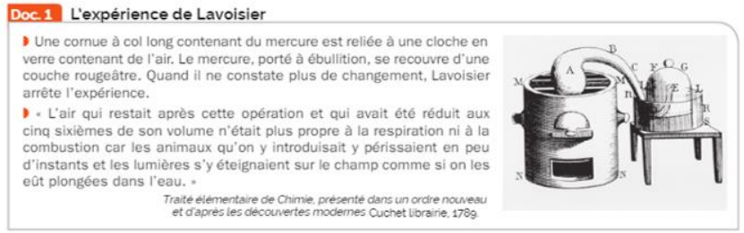
Doc.1 — L'expérience de Lavoisier
Une cornue à col long contenant du mercure est reliée à une cloche en verre contenant de l'air. Le mercure, porté à ébullition, se recouvre d'une couche rougeâtre. Quand il ne constate plus de changement, Lavoisier arrête l'expérience.
« L'air qui restait après cette opération et qui avait été réduit aux cinq sixièmes de son volume n'était plus propre à la respiration ni à la combustion car les animaux qu'on y introduisait y périssaient en peu d'instants et les lumières s'y éteignaient sur le champ comme si on les eût plongées dans l'eau. »
Traité élémentaire de Chimie, présenté dans un ordre nouveau et d'après les découvertes modernes, Cuchet librairie, 1789.
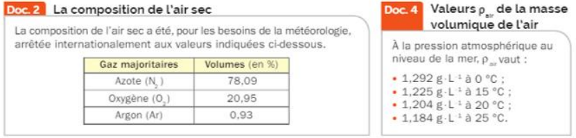
Doc.2 — La composition de l'air sec — arrêtée internationalement pour les besoins de la météorologie (Azote N₂ : 78,09 % ; Oxygène O₂ : 20,95 % ; Argon Ar : 0,93 %). | Doc.4 — Valeurs ρair de la masse volumique de l'air à la pression atmosphérique au niveau de la mer, selon la température.
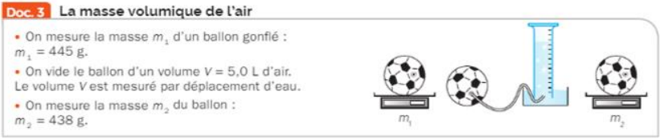
Doc.3 — La masse volumique de l'air
On mesure la masse m₁ d'un ballon gonflé : m₁ = 445 g. On vide le ballon d'un volume V = 5,0 L d'air (mesuré par déplacement d'eau). On mesure la masse m₂ du ballon dégonflé : m₂ = 438 g.
Exercice 1 — Corps pur ou mélange ?
INTERACTIFClique sur la bonne réponse pour chaque substance :
Les mélanges ci-dessous sont-ils homogènes ou hétérogènes ?
Exercice 2 — États et changements d'état
LISTE DÉROULANTEComplète chaque affirmation.
Exercice 3 — Masse volumique d'un échantillon d'huile
INTERACTIFExercice 4 — Masse volumique de l'éthanol
INTERACTIFExercice 1 — Changements d'état de l'acétone
INTERACTIF— un premier palier à −95 °C (de t ≈ 100 s à t ≈ 200 s)
— un deuxième palier à 56 °C (de t ≈ 400 s à t ≈ 550 s)
La courbe présente des paliers horizontaux lors des changements d'état (températures constantes). C'est la caractéristique d'un corps pur : ses changements d'état se font à une température fixe et bien définie.
2. Température de fusion :
3. Température d'ébullition :
Exercice 2 — Composition du laiton
INTERACTIFDonnée : ρlaiton = 8,39 g·cm−3
Volume : 1 m3 = 1 000 L = 1 × 106 cm3 | 1 mL = 1 cm3 | 1 L = 1 dm3
Masse volumique : 1 g·cm−3 = 1 000 kg·m−3 = 1 000 g·L−1
Exercice 3 — Huiles essentielles d'orange et de citron
INTERACTIFLes références sont : Lim (limonène), G (géraniol), Lin (linalol), Ci (citral).
Glisse les pastilles vers les bonnes zones de réponse sous chaque chromatogramme.
🧲 Pastilles à placer
Exercice 4 — CCM : identifier la composition d'un sirop
LISTE DÉROULANTEExercice 1 — Identifier une substance inconnue
INTERACTIF| Substance | ρ (g·cm⁻³) | T° ébullition (°C) |
|---|---|---|
| Eau | 1,00 | 100 |
| Éthanol | 0,79 | 78 |
| Cyclohexane | 0,78 | 81 |
| Acétone | 0,79 | 56 |
Exercice 2 — Composition d'un mélange air-hélium
INTERACTIFExercice 3 — Composition du laiton (fraction massique)
INTERACTIFDonnée : ρlaiton = 8,50 g·cm−3
Exercice 4 — Type Bac : authentifier une huile essentielle
RÉDACTIONAnalyse 1 — Masse volumique : 10,0 mL de l'échantillon ont une masse de 8,85 g. La masse volumique de référence de l'huile essentielle de lavande pure est ρréf = 0,885 ± 0,010 g·cm⁻³.
Analyse 2 — CCM : une CCM de l'échantillon est comparée à une CCM de référence d'huile essentielle de lavande pure. Le chromatogramme de l'échantillon présente exactement les mêmes taches, aux mêmes hauteurs, que celui de la référence — mais une tache supplémentaire apparaît, absente de la référence.
🎮 Escape Game — Le flacon mystère
DÉFI🔐 Entre le code à 4 chiffres pour ouvrir le coffre :
Masse volumique
- ρ = m / V
- Unités : kg·m⁻³, g·cm⁻³ ou g·L⁻¹
- ρeau = 1 000 kg·m⁻³ = 1 g·cm⁻³ (valeur de référence)
Densité d
- Rapport sans dimension de deux masses volumiques
- d < 1 : le corps flotte sur l'eau (solides/liquides)
Composition massique
- f = mespèce / méchantillon
- m% = f × 100
Composition volumique
- f = vespèce / véchantillon (mélanges gazeux)
- v% = f × 100
- Corps pur
- Constitué d'une seule espèce chimique. Corps pur simple : un seul type d'atomes (O₂, Fe, Au…). Corps pur composé : plusieurs types d'atomes en proportions définies (H₂O, CO₂…).
- Mélange
- Constitué de plusieurs espèces chimiques. Homogène : constituants indiscernables à l'œil nu après agitation. Hétérogène : au moins deux phases visibles.
- Changement d'état
- Transformation physique correspondant au passage d'un état (solide, liquide, gazeux) à un autre, à température fixe pour un corps pur donné.
- Mesure expérimentale
- Température d'ébullition mesurée au thermomètre ; température de fusion déterminée avec un banc Kofler.
- Masse volumique ρ
- Quotient de la masse d'un échantillon par son volume : ρ = m / V.
- Densité d
- Nombre sans dimension, rapport de masses volumiques (corps étudié / référence).
- Chromatographie sur couche mince (CCM)
- Technique de séparation et d'identification des espèces chimiques par migration sur une phase stationnaire (silice).
- Composition massique
- f = mespèce / méchantillon ; m% = f × 100.
- Composition volumique
- f = vespèce / véchantillon ; v% = f × 100 (mélanges gazeux).
- Fusion
- Passage de l'état solide à l'état liquide.
- Solidification
- Passage de l'état liquide à l'état solide.
- Vaporisation
- Passage de l'état liquide à l'état gazeux.
- Liquéfaction
- Passage de l'état gazeux à l'état liquide.
- Sublimation
- Passage direct de l'état solide à l'état gazeux, sans passer par l'état liquide.
- Condensation solide
- Passage direct de l'état gazeux à l'état solide, sans passer par l'état liquide.
- Phase stationnaire
- En chromatographie sur couche mince (CCM), support fixe (silice de la plaque) sur lequel migrent les espèces chimiques.
- Phase mobile (éluant)
- En CCM, solvant qui migre le long de la plaque et entraîne les espèces chimiques.
- Affinité
- Caractère plus ou moins fort de l'interaction d'une espèce chimique avec la phase stationnaire ou la phase mobile, qui explique sa vitesse de migration en CCM.
- Banc Kofler
- Plaque métallique à gradient de température, utilisée pour déterminer expérimentalement une température de fusion.
- Espèce chimique
- Ensemble d'entités chimiques identiques (atomes, ions ou molécules) ; c'est ce qui définit la nature d'un corps pur.
- Rapport frontal (Rf)
- En CCM, rapport entre la distance parcourue par une tache et la distance parcourue par le front du solvant : Rf = d / d₀. Une même espèce chimique a toujours le même Rf dans des conditions données, ce qui permet son identification.
- Révélateur / révélation
- Technique (lampe UV, vapeur de diiode…) permettant de rendre visibles des taches incolores sur une plaque de CCM.
- Modèle moléculaire / agitation thermique
- Représentation de la matière comme un ensemble de molécules en mouvement permanent ; l'agitation thermique (vibration, translation) augmente avec la température et explique l'organisation des états solide, liquide et gazeux.
- Ion
- Espèce chimique chargée électriquement, obtenue à partir d'un atome ou d'une molécule ayant gagné (anion) ou perdu (cation) un ou plusieurs électrons.
- Test caractéristique
- Expérience réalisée avec un réactif spécifique, permettant d'identifier une espèce chimique grâce à une observation caractéristique (précipité, changement de couleur…).
- Précipité
- Solide qui se forme lors d'un test caractéristique en solution ; son apparition signale un test positif.
- Eau iodée
- Réactif caractéristique de l'amidon : en sa présence, la solution devient bleu-noir.
- Sulfate de cuivre anhydre
- Solide blanc, réactif caractéristique de l'eau : il devient bleu en présence d'eau (hydratation).
- Nitrate d'argent
- Réactif caractéristique de l'ion chlorure Cl⁻ : formation d'un précipité blanc.
- Chlorure de baryum
- Réactif caractéristique de l'ion sulfate SO₄²⁻ : formation d'un précipité blanc.
- Oxalate d'ammonium
- Réactif caractéristique de l'ion calcium Ca²⁺ : formation d'un précipité blanc.
- Chromatogramme
- Support (plaque CCM) obtenu après migration de l'éluant, sur lequel apparaissent les taches correspondant aux espèces chimiques séparées.
🎬 MÉLANGE & CORPS PUR — Comment les différencier ?
Paul Olivier · 2 min 13
🎬 CHANGEMENT D'ÉTAT — Palier de température ? Corps pur ?
Paul Olivier · 5 min 54
🎬 Changement d'état — Corps pur ?
Paul Olivier · 3 min 23
🎬 Masse volumique pour identifier une espèce chimique
Paul Olivier · 3 min 56
🎬 MASSE VOLUMIQUE & DENSITÉ — Exercice corrigé
Paul Olivier · 5 min 29
🎬 CHROMATOGRAPHIE sur couche mince — MÉTHODE
Paul Olivier · 4 min 57
🎬 Chromatographie sur couche mince
PCCL · 6 min 50
🎬 Vidéo de synthèse du chapitre
Hatier · 2 min 50
🎬 Utilisation du banc Kofler
CultureSciences Chimie · 3 min 19
🔬 Animation — Chromatographie (éluant, phase fixe/mobile)
PCCL.
🔬 Chromatographie — simulation interactive
Ostralo.
🔬 PhET — Densité (masses et volumes)
Simulation interactive, en français.